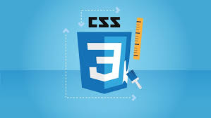

PRACTICAL-6: CREATE FOLLOWING LAYOUT USING CSS LAYOUT PROPERTIES.

Introduction to HTML
HTML stands for Hypertext Markup Language, and it is the most widely used language to write Web Pages.
Hypertext refers to the way in which Web pages (HTML documents) are linked together. Thus, the link available on a webpage is called Hypertext...

Introduction to CSS
CSS is short for Cascading Style Sheets, and is the preferred way for setting the look and feel of a website. Cascading Style Sheets (CSS) is a markup language responsible for how your web pages will look like. It controls the colors, fonts, and...

Introduction to JavaScript
JavaScript, often abbreviated as JS, is a programming language that conforms to the ECMAScript specification. JavaScript is high-level, often just-in-time compiled, and multi-paradigm. It has curly-bracket syntax, dynamic typing, prototype-based object-orientation...

Introduction to Bootstrap
Bootstrap is a free and open-source CSS framework directed at responsive, mobile-first front-end web development. It contains CSS- and JavaScript-based design templates for typography, forms, buttons, navigation, and other interface components...